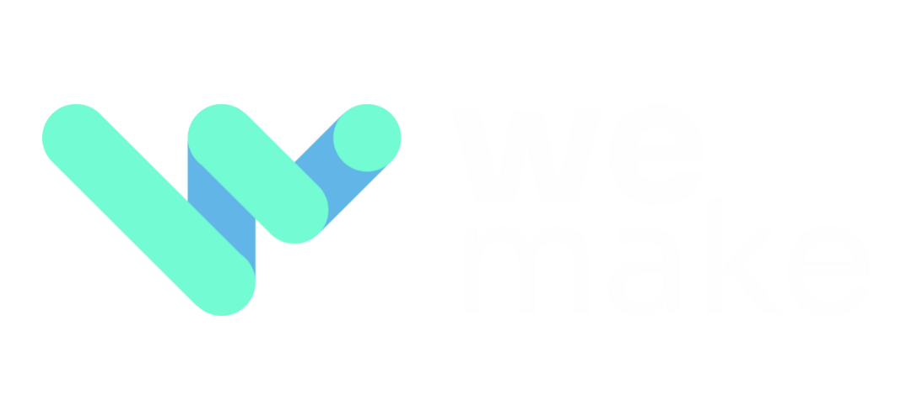
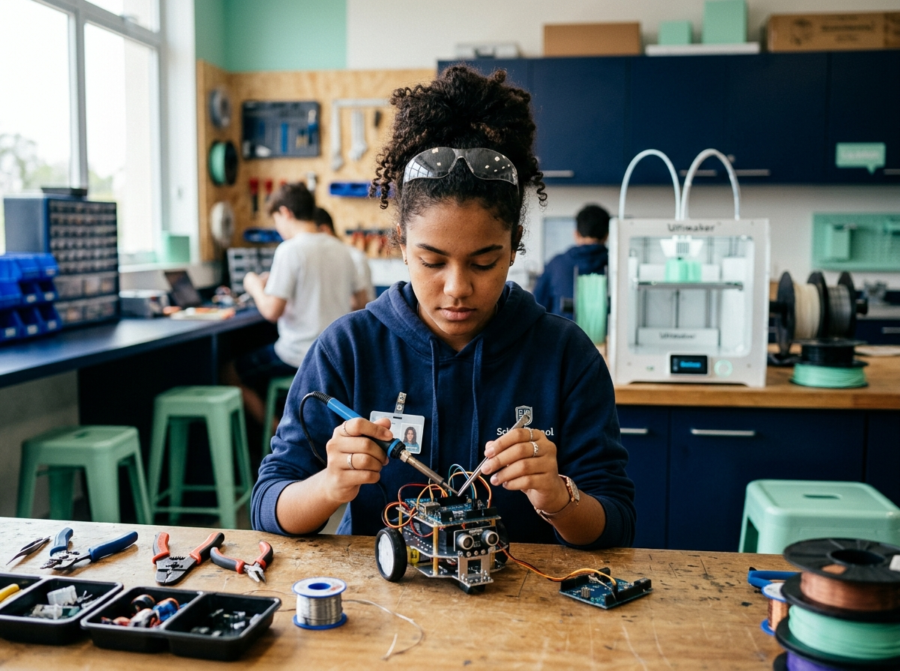
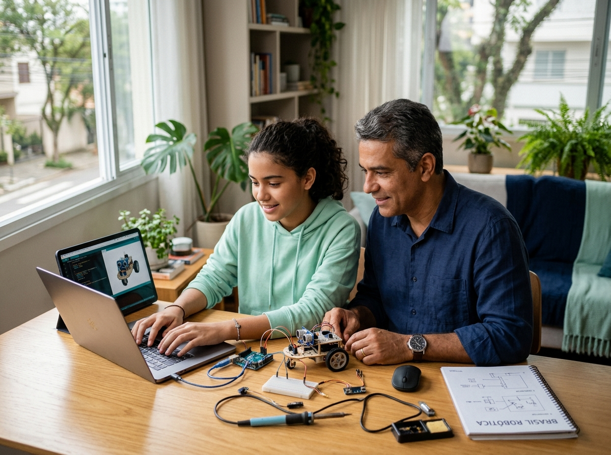

Plano de Negócio · 2027–2031
Ensinar a criar tecnologia, e não apenas a consumi-la: convertendo tempo de tela em conhecimento.

Tração & Validação de Mercado
Escolas parceiras ativas em 2026
Alunos atendidos na rede parceira
Crescimento em escolas (2024–2026)
Contratado para 2027 (86,5% da meta)
Identidade Institucional & Filosofia
Visão Institucional
Formar uma geração que cria tecnologia com sabedoria, para a glória de Deus e o bem do próximo.
Missão Pedagógica
Equipar escolas e famílias para ensinar tecnologia com verdade, beleza e bondade.
Proposta de Valor Única
Do 1º Fundamental ao 3º Médio: programação, robótica, IA e cidadania.
Ambiente próprio de gestão de aprendizagem e acompanhamento em tempo real.
Produto institucionalizado com responsável dedicada (Gabriela) e consultoria.
Formação e mentoria pedagógica contínua para os professores da escola.
Acompanhamento estratégico com mantenedores para fidelização e retenção.
Arquitetura de Produto
Estratégia
Currículo & Livro
Dados & LMS
Formação Docente
Ambiente Físico
Matriz Curricular
Lógica computacional aplicada à criação autoral de jogos.
Montagem de circuitos, microcontroladores e sensores físicos.
Prototipagem física, modelagem digital 3D e impressão.
Uso ético da tecnologia e IA sob cosmovisão cristã.
Metodologia de Aprendizagem
1. Conhecer: Deslumbramento inicial.
2. Explorar: Conteúdo e práticas.
3. Criar: Ciclo de projeto em 6 etapas.
Desenvolve autonomia e solução de problemas reais nos alunos.
Produto Físico & Personagem Pelicano
Identidade visual limpa com o personagem Pelicano nas capas, garantindo unidade editorial entre todos os segmentos.
R$ 420
Ticket médio de referência por aluno ao ano
Faixa praticada na carteira entre R$ 180 e R$ 420.
Expansão de Mercado · Homeschooling
Trilhas no Trívio (Gramática, Lógica e Retórica). Cobrança individual por aluno matriculado (R$ 249/nível) via parceria comercial Aspen.
Projeção 2027: 100 alunos iniciais com receita de R$ 49.890,00.

Formação & Capacitação Docente
Consultoria pedagógica (Suzana Bonifazio) remunerada em R$ 2.000/mês para suporte ágil e proativo.
Por Que Agora · O Vento a Favor
Lei nº 14.533/2023
Inclusão obrigatória do ensino de computação na educação básica.
Resolução CNE/CEB nº 2/2025
Obrigatória do 1º Fundamental ao 3º Médio em 2026.
Fundeb (Março 2026)
Repasse condicionado à comprovação de adequação curricular.
Mercado Regulado · Leis Estaduais
DF · Lei 7.796/2025: Centros de Robótica.
SP · Deliberação CEE 233/2025: Educação Digital obrigatória.
MG · Parecer CEE 1.588/2025: Referencial Curricular.
PR · Deliberação CEE 04/2025: Regra em redes privadas.
RS · Resolução CEEd 382/2024: Exigência pioneira.
TAM / SAM / SOM · Oportunidade
TAM · Mercado Total
Segmento Fundamental
SAM · Mercado Confessional
SOM · Meta 2031
A Dor do Cliente
Contrato pontual, sem currículo plurianual nem visão cristã.
Sistema administrativo que armazena dados, sem engajar alunos.
Workshops isolados sem acompanhamento contínuo dos docentes.
Nossa solução unificada elimina o atrito e reduz o custo total em até 30%.
Análise Competitiva & Alianças
Propostas Confessionais
Limite: Materiais pontuais; sem plataforma autoral ou assessoria.
Sistemas Seculares
Limite: Soluções seculares sem resposta ética ao público cristão.
Parceiros Estratégicos
Aliança estratégica e cooperação institucional (sem concorrência).
Fatores de Proteção · Moats
Acesso às escolas confessionais.
EspecializaçãoEscala e força de distribuição.
AgilidadeCredibilidade e canal institucional.
Parceiro EstratégicoSoftwares de apoio generalistas.
Integração 5 FrentesPresença de Campo
Paraná (Sede)
São Paulo
Santa Catarina
Paraíba
Espírito Santo
Maranhão
Rio Grande do Sul
Rio Grande do Norte
Ceará
Instituições integradas no pipeline comercial para o ciclo de 2027.
Time & Liderança
CEO & Diretor Pedagógico
Gerente Admin
Marketing
Consultora Pedagógica
Espaço Maker
3 Devs + 1 Dados
Infraestrutura Operacional
Prospecção, qualificação e automação comercial de contratos.
Distribuição de aulas e análise de aprendizagem em tempo real.
3 desenvolvedores + 1 cientista de dados dedicados à evolução da IP.
Comunidade & Reputação de Campo
Torneios de programação e robótica que engajam alunos e elevam o nível técnico das escolas parceiras.
Desafios com e-readers, bolsas e artigos científicos no Ensino Médio para engajamento acadêmico.
Posicionamento Institucional
"Integrando currículo, plataforma, espaço maker, formação e assessoria como partes indissociáveis de uma mesma proposta."
Plano Comercial Plurianual
Governança & Leitura Estratégica
Forças
• 5 frentes num sistema único.
• Currículo 1º ao 9º ano.
• Cosmovisão cristã autoral.
Fraquezas
• Dependência do fundador.
• Plataforma em maturação.
• Escala no time comercial.
Oportunidades
• Educação Digital BNCC.
• Homeschooling com Aspen.
• Escola Tecnologia em 2030.
Ameaças
• Entrada de sistemas tradicionais.
• Reação de grandes grupos editoriais.
• Pressão de custos nas escolas.
Projeção Financeira de Receita
Receita 2027 (Escolas + Home)
Resultado Operacional 2027
Caixa de Referência
Estrutura de Custos & Alocação
41,8% Pessoal: CLT, PJ, Pró-Labore & Time Dev
21,2% Produção Gráfica: Impressão do Livro Maker
13,2% Finanças & Taxas: Operação bancária e impostos
5,2% Tecnologia: Cloud e licenças Arkos
18,6% Demais categorias: Marketing e infraestrutura
Métricas de Governança
Margem bruta por escola parceira.
Renovação contratual das escolas.
Retorno comercial superior a 4x.
Custo por hora de mentoria docente.
Gasto de servidor por aluno ativo.
Resultado na montagem de salas.
Gestão de Riscos
Mitigação: Automatização de processos de gestão e estruturação da equipe comercial.
Mitigação: Registro da nova marca, direitos autorais do currículo e código Arkos no INPI.
Visão de Longo Prazo · 2030+
Atendimento direto ao aluno focado no aprender a criar tecnologia em vez de apenas consumir.
Extensão da proposta pedagógica em ensino superior em parceria com a Faculdade Cidade Viva.
Toda a receita projetada entre 2027 e 2031 provém do ecossistema escolar e homeschooling já existente.
Captação de Investimento
A We Make cresce de forma rentável e autônoma. O aporte de capital antecipa a execução de 5 para 3 anos.
Estruturação de time de busca ativa e vendas.
Aceleração de mentores na Academia We Make.
Decisão Solicitada · Chamada para Ação
Próximo Passo & Prazo
Responsáveis:
Dênis Francisco (CEO) & Conselho